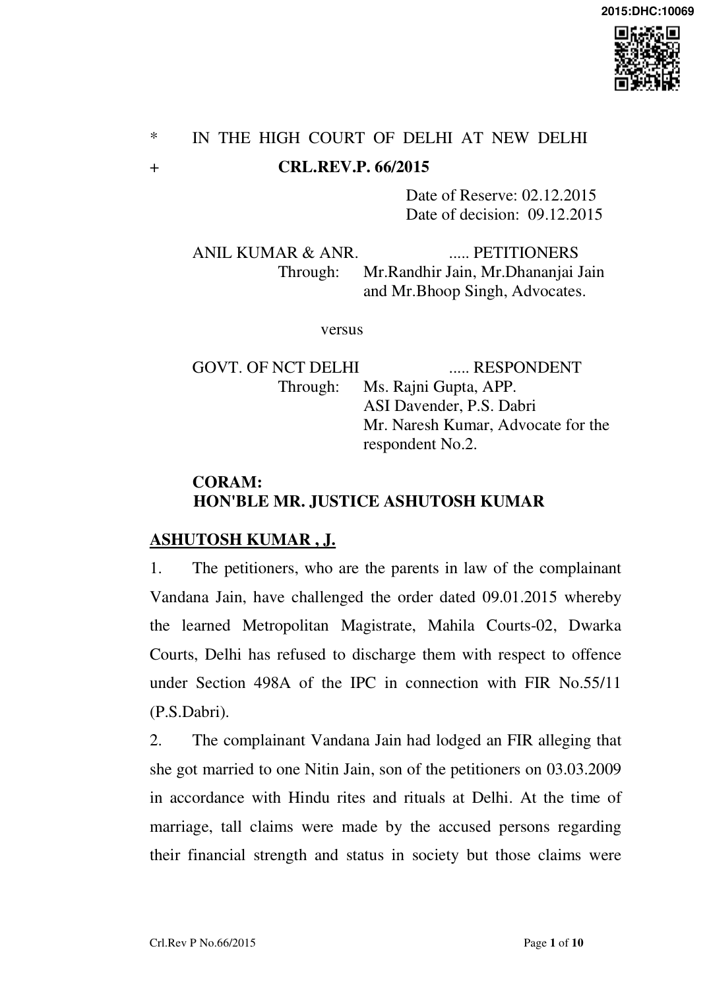

shortly found to be false. It was alleged that after the marriage, the accused persons insinuated the complainant of bringing insufficient dowry and she was asked to hand over all the personal jewellery. The husband of the complainant was working at Nigeria. The petitioner No.1 was alleged to have behaved in a strange fashion and occasionally displayed abusive behavior as against the complainant. Petitioner No.2, the mother-in-law of the complainant taunted her for bringing less dowry and asked her to deposit all her jewellery with the in-laws. The complainant has alleged of being assaulted physically by her husband in an inebriated condition. When the complainant visited Nigeria, she was made to stay in a flat which was shared by the relatives of her husband. The husband and his relatives were in the habit of consuming liquor and watching pornographic films. Her protest regarding the same was met with physical and mental torture. On deterioration of her health, she came back to India. After coming back from Nigeria, she was ill treated in her matrimonial home and was made to do all house hold work. After sometime, the husband of the complainant left for Nigeria, never to come back. The complainant has alleged that such acts of torture and harassment made her extremely depressed and she had to undergo treatment for the same in a hospital at Delhi.
- Learned counsel appearing for the petitioners submitted that a complaint was given to the CAW Cell in which the complainant had stated that she had been residing with her parents for the last six months. Before the CAW Cell, the complainant did not appear on several dates and did not produce the list of dowry articles. The CAW Cell kept the matter pending for about two years and the FIR was registered only on 12.02.2011.
- Learned counsel for the petitioners has further submitted that the police, after investigation submitted a report under Section 173 of the Code of Criminal Procedure, sending up the husband of the complainant only for trial and with respect to the petitioners it was stated that there were no sufficient materials to put them on trial.
- Despite this, the Court of the learned Magistrate took cognizance against the petitioners under Sections 498A/406 and 34 of the IPC by order dated 13.09.2013.
- The aforesaid order dated 13.09.2013 was never challenged before any Court of law.
- An application for discharge by the petitioners was rejected by the Court below vide order dated 09.01.2015. Hence the present petition.
- Perused the records and heard the counsel for the parties.
- The charge sheet which was filed by the police clearly discloses that the husband of the complainant was residing in Nigeria and he could not be traced. The charge sheet also took note of the fact that during the course of investigation, when the petitioners had prayed for bail, the dispute was settled between them and the complainant on deposit of Rs.15 lakhs by the order of the High Court. The complainant had accepted such amount towards settlement of her matrimonial disputes. Initially an amount of Rs.15 lakhs was deposited with the Registrar General of Delhi High Court but on the request of the complainant, the same was released in her favour. The complainant who is present in person admits of her having received the aforesaid amount.
- With respect to the allegations against the petitioners regarding abusive behavior, insinuation about insufficient dowry and ill treatment, the police, on investigation, found the evidence to be absolutely deficient. Only Nitin Jain, the husband of the complainant was sent up for trial for the offence under Sections 498A/406 of the IPC.
- Differing with the police report, the learned Magistrate took cognizance against the petitioners under Sections 498A/406 and 34 of the IPC.
- On the petition of discharge, the learned Court below accepted the submission of the petitioners with respect to offence under Section 406 IPC but rejected the prayer of discharge under Section 498A IPC and fixed a date for framing of the charge.
- The impugned order refers to Onkar Nath Mishra & Ors vs. State (NCT of Delhi) & Anr, 2008(1) JCC 65 wherein the Supreme Court has held that at the stage of framing of the charge, the Court is not expected to go deep into the probative value of the materials on record and is only to see whether there is a ground for presuming that the offence has been committed. The Court is not required to see whether conviction of the accused is possible on such material. Even a strong suspicion can lead the Court to form a presumptive opinion about the materials being sufficient to constitute an offence. In that event, charge must be framed.
- Learned counsel for the petitioners assailed the order of refusal to discharge on twin grounds namely (i) the power of Section 468 of the Code of Criminal Procedure applied to the facts of this case and
- the materials collected during the course of investigation and the developments which took place, did not make out any case under Section 498A against the petitioners.
- The submission of the petitioners with respect to the issue of limitation in taking cognizance of the offence within a period of three years is not acceptable for the reason that the date of occurrence is stated to be on or before 15.09.2009 whereas the FIR No.55/11 (P.S.Dabri) was lodged on 12.02.2011. The complaint before the CAW Cell was lodged on 28.01.2010.
- However, cognizance was taken on 13.09.2013, i.e. after 3 years.
- Section 468 of the Code of Criminal Procedure reads as hereunder:- “468. Bar to taking cognizance after lapse of the period of limitation.
- Except as otherwise provided elsewhere in this Code, no Court shall take cognizance of an offence of the category specified in sub- section (2), after the expiry of the period of limitation.
- The period of limitation shall be-
- six months, if the offence is punishable with fine only;
- one year, if the offence is punishable with imprisonment for a term not exceeding one year;
- three years, if the offence is punishable with imprisonment for term exceeding one year but not exceeding three years.”
- For the purposes of this section, the period of limitation, in relation to offences which may be tried together, shall be determined with reference to the offence which is punishable with the more severe punishment or, as the case may be, the most severe punishment.”
- In Sarah Mathew vs. Institute of Cardio Vascular Diseases by its Director and Ors, (2014) 2 SCC 62, the Supreme Court deliberated on the question whether for the purposes of computing the period of limitation under Section 468 of the Code of Criminal Procedure, the relevant date is the date of filing the complaint or the date of institution of prosecution or whether the relevant date is the date on which a Magistrate takes cognizance of the offence.
- A conflict of opinion was seen by the Hon’ble Supreme Court in the decision in Bharat Damodar Kale vs. State of A.P (2003) 8 SCC 559 and in Krishna Pillai vs. T.A.Rajendran, 1990 Supp.SCC
- In Bharat Damodar Kale (Supra) a two Judge bench of Supreme Court held that for the purpose of computing the period of limitation, the relevant date is the date of filing of complaint or initiating criminal proceedings and not the date of taking cognizance by a Magistrate or issuance of a process by the Court.
- In Krishna Pillai (Supra) a three Judge Bench of the Supreme Court, while dealing with Section 9 of the Child Marriage Restraint Act, 1929 held that no Court shall take cognizance of any offence under the Child Marriage Restraint Act, 1929 after the expiry of one year from the date on which the offence is alleged to have been committed.
- Under the Child Marriage Restraint Act, cognizance was barred after one year of the date of commission of the offence.
- In Sara Mathew (Supra) the controversy was laid at rest and it was held that for the purposes of computing the period of limitation under Section 468 of the Code of Criminal Procedure the relevant date is the date of filing of the complaint or the date of institution of prosecution and not the date on which the Magistrate takes cognizance.
- The verdict of the Supreme Court in Bharat Damodar Kale (Supra) was held to be a correct law.
- Thus the aforesaid contention of the petitioners has got no legs to stand.
- In order to appreciate the second contention of the petitioners namely insufficiency of the materials for putting the petitioners on trial and peculiar developments which had taken place in the case during the course of investigation, it is necessary to examine the provisions of Sections 239 & 240 of the Code of Criminal Procedure as the case in hand is a warrant case instituted on a police report. “Section 239 of Cr.P.C. When accused shall be discharged.- If, upon considering the police report and the documents sent with it under section 173 and making such examination, if any, of the accused as the Magistrate thinks necessary and after giving the prosecution and the accused an opportunity of being heard, the Magistrate considers the charge against the accused to be groundless, he shall discharge the accused, and record his reasons for so doing.
- Framing of charge.
- If, upon such consideration, examination, if any, and hearing, the Magistrate is of opinion that there is ground for presuming that the accused has committed an offence triable under this Chapter, which such Magistrate is competent to try and which, in his opinion, could be adequately punished by him, he shall frame in writing a charge against the accused.
- The charge shall then be read and explained to the accused, and he shall be asked whether he pleads guilty of the offence charged or claims to be tried.”
- The ambit of Section 239 of the Code of Criminal Procedure and the approach to be adopted by the Court while exercising the powers vested in it under the said provisions was considered by the Supreme Court in Onkar Nath Mishra vs. State (NCT of Delhi) & Anr, 2008 (2) SCC 561. In the aforesaid case, it was held that at that stage, even a strong suspicion would justify framing of charges. The aforesaid view was only a reiteration of the view taken by the Supreme Court in State of Karnataka v. L. Muniswamy, 1977(2) SCC 699; State of Maharashtra and Ors. v. Som Nath Thapa and Ors. 1996 (4) SCC 659 and State of M.P. v. Mohanlal Soni, 2000 (6) SCC 338. The view which was common in all the aforesaid decisions that at the stage of framing of charge, probative value of the materials on record cannot be gone into and the materials brought on record by the prosecution has to be accepted as true at that stage. The same view was endorsed by the Supreme Court in Sheoraj Singh Ahlawat and Ors. vs. State of U.P. and Anr., 2013(1) SCC page 476.
- The materials/evidence for framing of charge under Section 498A, as contended by the petitioners, is required to be analysed keeping in mind the aforementioned principles enunciated by the Supreme Court.
- The FIR clearly makes out a case of the husband of the complainant not treating her well. The complainant went to Nigeria, only to find that her husband was in the habit of drinking alcohol and watching pornographic films. The house in which the complainant was kept was shared by other relatives of the husband. There is no mention of the petitioners having gone to Nigeria to stay with their son or with the complainant. The averments made in the FIR further disclose that the tall claims of the family of the petitioners was found to be false during the period when the complainant had the opportunity to stay in the matrimonial family. Though it is stated that she was insinuated and taunted for bringing less dowry and was made to do household work as if she was a maid servant of the house, but no specific instance of such acts of cruelty have been listed by the complainant. A vague and general allegation has been raised that she was not treated well in her matrimonial home when she came back from Nigeria. The FIR also refers to the assessment of the complainant that the petitioners did not want her to come back to India.
- Apart from this, admittedly, the complainant accepted Rs.15 lakhs towards settlement of her matrimonial dues. The husband of the complainant who is the son of the petitioners is untraceable.
- A protracted investigation in the matter also did not yield any definitive finding regarding the guilt of the petitioners. The petitioners were not sent up for trial.
- The Court below, while quoting from Onkar Nath Mishra vs. State (NCT of Delhi) & Anr (Supra) did not refer to the facts which led it to form a presumptive opinion as to the existence of materials which constitute the offence under Section 498A of the IPC as against the petitioners.
- Thus for the aforementioned reasons, the order dated 09.01.2015 is not sustainable and is set aside.
- The petitioners stand discharged.
- The petition is allowed. Crl.M.A.1671/2015
- In view of the petition having been allowed, this application has become infructuous.
- This application is disposed of accordingly.
ASHUTOSH KUMAR, J
DECEMBER 09, 2015 k